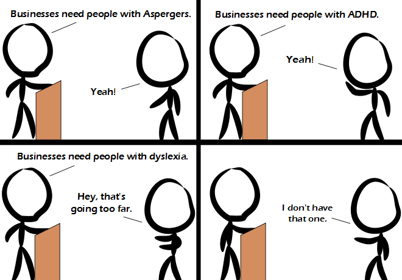

Comic JK 932
When I Feel Like It
⇤
<
?
>
⇥

⇤
<
?
>
⇥
Forum
.
RSS
.
Digg
.
Facebook
.
Reddit
.
Twitter
.
Stumbleupon
Enter your thoughts on number 932 here. Please, no spamming, trolling, phreaking, or being dyselxic. Seriously, what the hell is this shirt? SECOND FURRYST POST ^ *BLEEP* idtio I hate you adnd I hope yu daie ^ >>( one of Hallmark's less-successful range of greetings cards... ) *BLEEP* calm down mate........ Melody's alien pet was called *BLEEP* u guys are all retarded >+1 >+o <- looks like a stick figure I think they are all the same guy!! >Yes. Surprising he doesn't have dyslexia, the internet seems to be full of people claiming to have it, usually because they can't be bothered spelling things correctly. >>Especially as ADHD/ADD and dyslexia seem to be related. I tend to confuse '7's with 't's. Am I the only one? > 7here's a difference? >> It's funny how I actually read your message without no7icing it. >>> Hey, do you think any0ne could insert extra characters into our word$ without reading them? >>>> I h@ve n0 idea. 1t ©ould be, i† cou|d n0t. 8ut, wh@tever, let$ jµst keep th¡$ up. >>>>> How about inserting random snippets monkey taco of words into our text? Haha I have the one in the alt text, but it's only a quirky side effect of my intelligence so don't worry. >OMG I do too!.. ..want to date? ..repeatedly? Your mother..... sorry - another comic that makes it too easy... someone do it for me this time and may the best anus insult win! >your mother is a nice woman who does her best to raise a good family... >> Fail. >>>yes, she clearly did... I eat ass burgers for breakfast. >How else would you combine all the greatest flavors from the biggest fast food restaurants into one dish? What about CDO? It's like OCD but in alphabetical order, the way it should be! > Compulsive disorder of obsession? >>CDO - Can't Decide Obsession - suffered by those who have great difficulty making decisons... ? >>>I think maybe you guys are missing the joke...? >>>>humour ? it is... a difficult concept... >>>>> Hi Data! >>>>>>( actually it was Saavik... in reply to James T Kirk... ) >>>>>>> I'd tap that. Let's be fair. It's really more about affirmative action* *and having an excuse to goof off all day and only occasionally produce work...